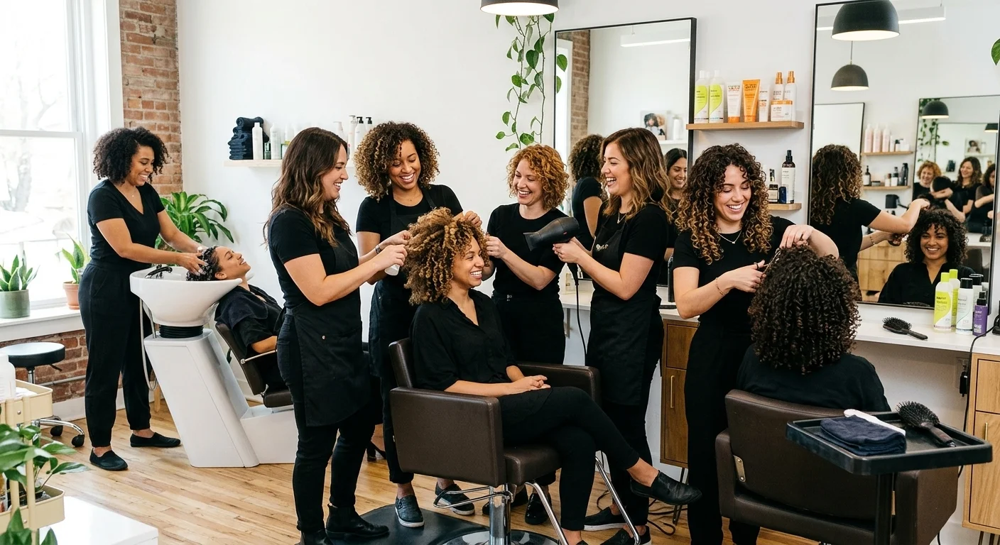
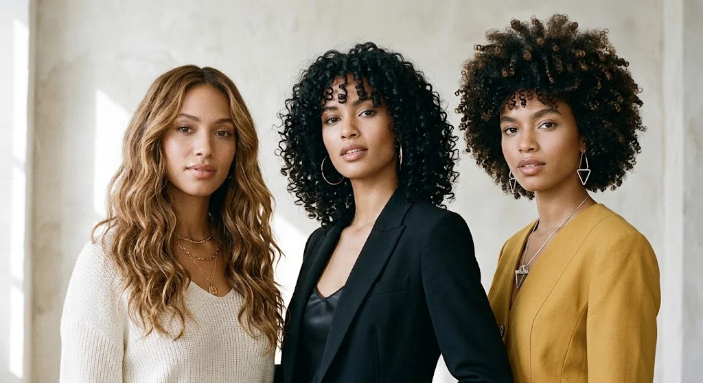
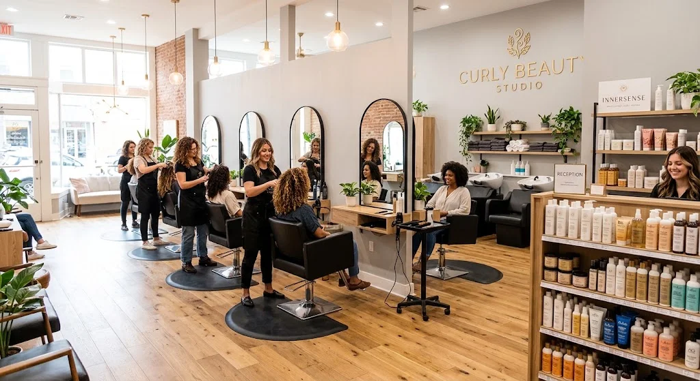

Atención personalizada
Escuchamos tus necesidades para ofrecer una atención adaptada a ti y a tu cabello.
En Curly Beauty Studio creemos que cada cabello tiene una historia, una textura y una belleza única. Creamos este espacio para que puedas conocer, cuidar y disfrutar tus rizos de una manera más consciente y personalizada.

Curly Beauty Studio es un espacio especializado en el cuidado de cabellos ondulados y rizados. Nuestro propósito es ofrecer una experiencia cercana, donde cada persona pueda sentirse cómoda, escuchada y orgullosa de su textura natural.
Curly Beauty Studio nació del deseo de crear un espacio donde los cabellos rizados y ondulados reciban el cuidado que realmente necesitan. Creemos que cada rizo tiene una belleza única y merece ser tratado con dedicación, conocimiento y amor.
En Curly Beauty Studio nos enfocamos en comprender las características de cada cabello ondulado y rizado para ofrecer una atención adaptada a su textura, necesidades y estilo. Nuestro objetivo es trabajar con el cabello natural, respetando su forma y ayudándote a conocer mejor tus rizos.

Escuchamos tus necesidades para ofrecer una atención adaptada a ti y a tu cabello.
Nuestro enfoque está dirigido especialmente a cabellos ondulados y rizados.
Queremos que no solo disfrutes del resultado, sino que también aprendas a cuidar tus rizos.
Creamos un ambiente pensado para que puedas relajarte y disfrutar de tu experiencia.
Ayudarte a conocer, cuidar y amar tus rizos mediante servicios personalizados y técnicas especializadas.
Crear una comunidad donde cada persona pueda sentirse segura y orgullosa de su cabello natural.
Respetamos y resaltamos la textura natural de cada cabello.
Nos preocupamos por la salud y bienestar de tu cabello.
Queremos que te sientas segura y orgullosa de tus rizos.
Cada cabello es diferente, por eso buscamos adaptar nuestra atención a tus necesidades.
Nos comprometemos a brindar una atención cercana y personalizada, utilizando técnicas adecuadas para cuidar la salud de cada cabello. Queremos que no solo salgas feliz con el resultado, sino que también aprendas a cuidar tus rizos en casa.

Creamos un espacio acogedor y pensado especialmente para que puedas relajarte, disfrutar y sentirte cómoda mientras cuidamos tus rizos.